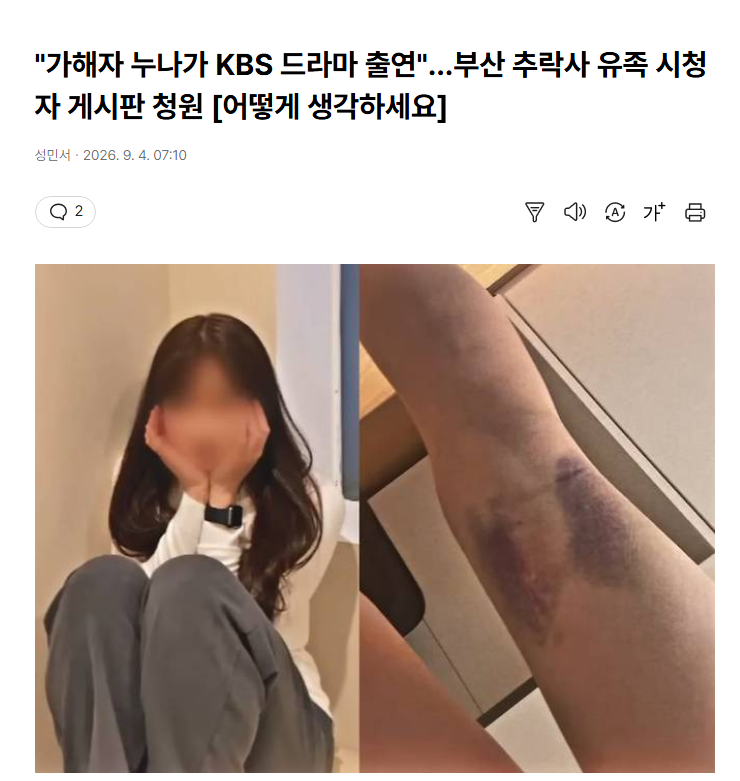
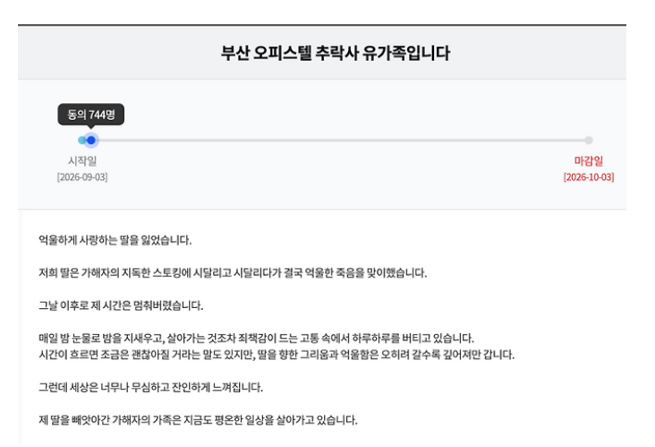

저 유가족이 주장하는 가해자 누나가 뭐 '제 동생이 자랑스럽습니다!' 라고 했냐? 당연히 하영때랑 다를 수 밖에 ㅋㅋㅋㅋㅋㅋㅋㅋㅋㅋㅋㅋㅋㅋㅋㅋ
분위기가 왜 다른지 모른다면 넌 언어영역 5등급이다.
저건 5등급 주기에도 아깝다ㄹㅇㅋㅋㅋㅋㅋ
연 좌 제
가해자 처벌이 제대로 안되니까
연좌제같은 의견이 계속 나오는거 아닌가 싶네
한효주 = 소속사가 사건 덮으려고 언플함
하영 = 친일파 가문 특성상 금전적 수혜를 간접적으로도 받았을거고 지 입으로 조상 팔이 자랑하다 파묘됨
본문 = 남동생이 한 행위 옹호한 것도 아니고 덮으려고 언플한 것도 아니고 걍 가만히 있었음
다 각기 사안 다른거 가져와서 "저땐 이랬으면서 이땐 왜 다르냐" ㅇㅈㄹ 하면서 물타기 하는 애들은 조건이 다른데 반응이 왜 같아야 하는데 ㅋㅋㅋ
다른 연예인들은 이미 대중들한테 인지도 있고 착한 이미지가 있으니까 가족이 문제 있으면 같이 타격받는거지
누군지도 모르는 무명 가해자 누나를 앞길 같이 막아달라고하면 대중한테 지지를 얻기 어렵지.
개드립 하는 일반인인 내가 탈세 1억한 것보다 유명 연예인이 탈세 500만원하는게 더 분노유발버튼임
일본하고 똑같이 가고 싶어하는건가
그게 정의임
?
가해자의 대한 처벌이약하고 흐지부지 넘어가니까 연좌제로 되는거임
친일파,전쟁범죄자,사기꾼,일찐들,성범죄자들 같은 부류들도 지금 연좌제로 조지는거랑 비슷하잖아
뭔 개소리야
가해자 누나가 뭐 동조한게 있는게 아닌이상 좀..
나락공화국ㅋㅋㅋ 오늘은 또 누구를 나락보낼까 두근두근 ㅋㅋㅋ
부모면 모를까 누나는 리얼 뭔죄인데 씨발 ㅋㅋㅋ
가족은 왜 또 뭐가 문젠데
이건 아니지
연좌제는 옹호하는건 아니지만 가족중에 공인 있고 하면 그 동생새끼는 행동거지는 조심 해야하는게 맞는데
부모가 그 동생 줘패서라도 피해자들에게 사과하거나 보상을 제대로 하던가.. 그걸 안했으니
저 누나가 대신 피해를 보는거라고 봄
내가 유가족이어도 저럴꺼같긴함
연좌제 나쁘고 하면 안되는거고 저 내용을 보고 화내는것도 당연함.
근데 피해자 가족 입장에선 속 뒤집어 지는것도 이해함...
얼마나 아프고 힘드실지 감도 안오지만 그래도 연좌제는..
연좌의 굴레~ 미~~개
화나는건 화나는거고......그래 뭐... 누가 이해하겠냐 저맘을
개붕이들 이중성 역겹누
친일은 안감싸면서 이런건 귀신 같이 감싸네
하영은 자기 집안 내력에 대해서도 모르고 스스로 어그로 끌고다녔으니....